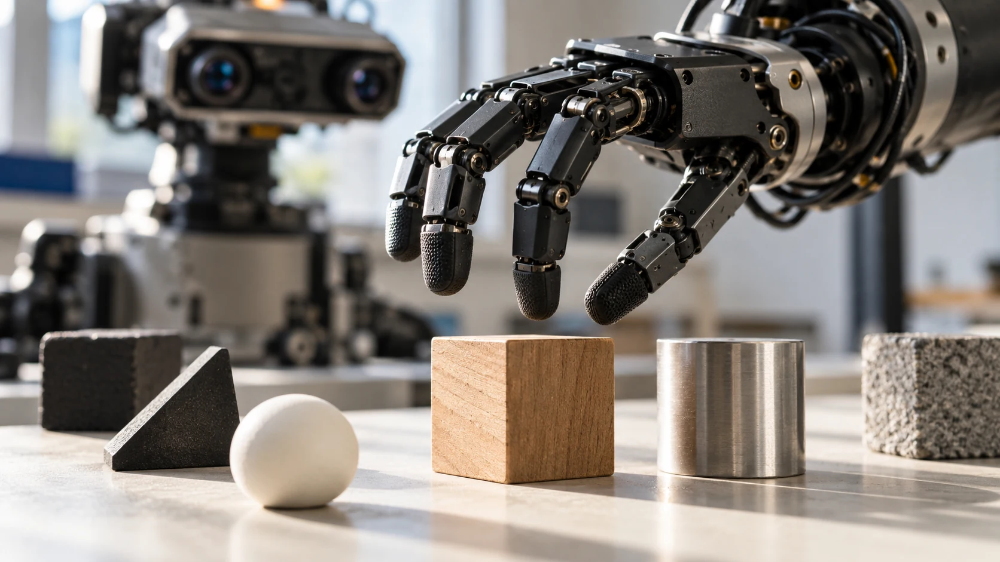

Buy a platform for a defined workflow, not a collection of impressive demonstrations.
The first question in a humanoid purchase should be surprisingly ordinary: what needs to happen, where, and how often? A robot can look remarkably capable on video while being a poor match for the task you actually need to solve. A clear operating brief makes the entire evaluation more useful.
Describe a complete task
“Pick up a box” is a movement. A workflow includes finding the right box, recognizing an unsuitable one, reaching the destination, and recovering when something changes. Write down the starting conditions and the finished result. Then identify which parts of that sequence the platform must perform without help.
Match the platform to the team
A development platform and a finished business solution solve different problems. One may give engineers access to low-level control; another may offer a supported application with fewer customization options. Ask who will own integration, training, maintenance, and daily operation. Include that work in the buying decision.
Request a representative demonstration
Provide a small test set with realistic objects, lighting, surfaces, and interruptions. Record successful completions, human interventions, and reset time. A useful trial includes the ordinary failures you expect in practice, rather than repeating only the cleanest successful run. Agree on the evaluation criteria before the demonstration.

Make the shortlist explainable
For each candidate, capture the exact configuration, available interfaces, service path, and unanswered questions. A missing specification is a question to resolve, not a zero. Keep manufacturer claims separate from observations made during your own trial. The best shortlist explains why each platform belongs on it.
Turn a task into an acceptance brief
Imagine a small research team moving reusable trays between two benches. Its brief should describe the tray dimensions, permitted starting positions, destination tolerance, and what counts as a completed transfer. It should also describe an empty tray, an occupied destination, and an object placed across the route. These are proposed evaluation conditions, not claims about any particular robot. Give each condition an owner who can explain why it matters. A supplier can then discuss a concrete application instead of answering a vague question about whether its platform can help in a laboratory. Keep the first brief short enough to use during every demonstration.
Separate a useful trial from a purchasing promise
Before the evaluation, agree on what the team will learn and what commitment follows from a successful result. A trial might establish that the robot can reach both benches and execute a supported transfer example. It may leave service arrangements, production integration, or unattended operation unresolved. Write those boundaries beside the results. If a demonstration uses an engineer to position every tray, include that work in the observed workflow. The team can still value the result while understanding its conditions. Ask for the tested configuration in writing, including the hand, software edition, external computer, and accessories used to obtain it.
Use a decision log when opinions differ
A robot purchase brings together people with different priorities. An engineer may favor an accessible control interface, an operations manager may focus on recovery time, and a purchasing colleague may need a clear replacement path. Create a decision log with four columns: requirement, evidence, unresolved question, and responsible person. Record disagreements as tradeoffs that need evidence. For example, an attractive compact platform might need a new workstation layout, while a larger one might fit the existing process. Neither observation needs a numerical score immediately. Resolve the requirements that could rule out a candidate before spending time ranking optional features or polishing a presentation.
Design the first month before delivery
Sketch the first month as a sequence of small, reviewable outcomes. Begin with receiving inspection and the supplier's setup procedure, then reproduce a documented example, then introduce the team's own objects and environment. Give each milestone an observable result and a recovery plan if it fails. Reserve time for documentation, operator practice, and ordinary questions to the supplier. Avoid making the arrival date the same day that a public demonstration must succeed. A practical first-month plan reveals whether the team has enough time and ownership to use the purchase well. It also gives a successful delivery a meaning beyond a crate arriving at the door.
Your next step.
- Write a one-page workflow brief.
- Name the person responsible for integration.
- Agree on measurable trial criteria.
Sources & further reading
Primary sources and manufacturer documentation for the examples and further investigation. Recommendations in this article are HUMANOID’s editorial guidance.
Boston Dynamics: Atlas ↗Pollen Robotics: Reachy 2 documentation ↗Originally prepared and references reviewed: 24 October 2026. Expanded with practical guidance and original illustrations: 25 October 2026. Editorial archive date: 22 Oct 2026. This is original editorial content, not a record of a historical product launch, independent test, or purchase.